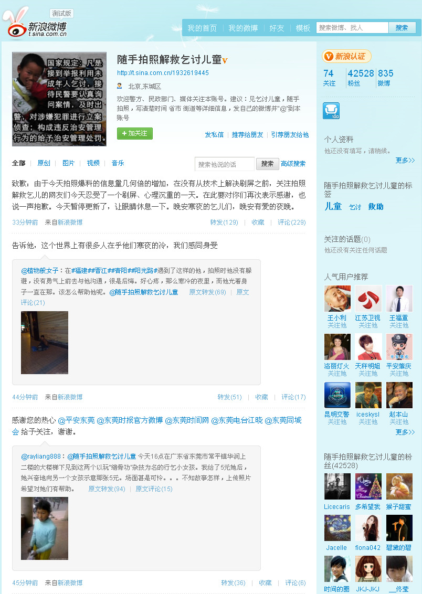

记在自己的微博里好找些。@头条新闻:这是由@于建嵘 教授发起的 @随手拍照解救乞讨儿童 官方微博。希望大家见到街头乞讨儿童就拍照或录像，可传自己的微搏并@ 此微博，或私信或传本活动专用信箱：jiejiuqier@sina.com。 网页链接 
姣姣和我一起看了北京台的《环球春晚》，看到欧约斯的弗拉门戈舞时，她说难看，也难怪，她才7岁，可台上的欧约斯已经75岁了。如果75岁还能在台上活跃，那弗拉门戈舞蹈确实是很适合成熟女性表演的。在#OpenParty#上看到过弗拉门戈真人秀，感觉这个舞蹈还是蛮适合闷骚形程序员的。
 网页链接
网页链接